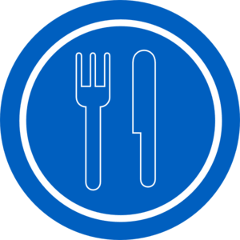

Full time student at the University of California Riverside seeking a Bachelor's Degree in Political Science/International Affairs with a Minor in History. In process of higher education, I have also earned a legal studies certificate from Mount San Jacinto Community College during my Associate's program.
Working full-time at Costco Wholesale Corporation in Merchandising. Taking advantage of opportunities for growth and skill development when openings for cross-training have been made available. A willingness to learn has brought me into various departments while with the company.
Going to school full-time and working full-time on top of that has not been easy, but I think the ability to do both exemplifies my ability to juggle multiple tasks at a time, while being capabale of handling what each of them throws my way.
• Worked in a fast-paced environment X
• Always made sure cooperation and communication were my highest priorities
• Learned to work with guests and provide them quality experiences
• Learned the importance of having a list of priorities in mind to better prepare for the day ahead
• Worked in a food service department for a period, and ensuring efficiency and quality to members
